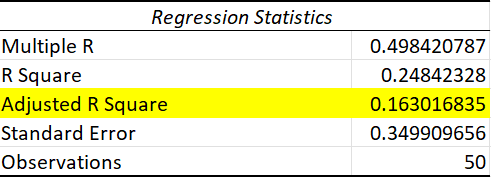
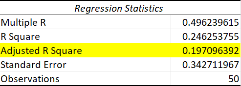
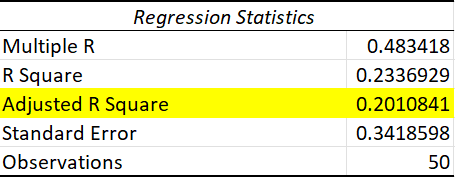

Methodology Analysis
Through our hypothesis tests, we used the information generated from the significance of our independent variables to draw inferences about the factors that contribute to GPA scores.
We tested our multiple regression model by removing certain variables to improve the adjusted r-squared value. We decided to remove the variable with the highest p-value after each regression run, to identify and discount the least impactful predictors on GPA. For example, we removed gender as an independent variable and were pleased to find that the adjusted r squared value increased to 0.201, indicating how gender did not provide additional predictive value to our model. Please note that we are following the principle where the adjusted r square increases if and only if the added variable provides signficiant predicting power. Therefore if we were to remove variables and witness an increase in the adjusted r square, then that variable never provided sufficient power to begin with.
Observe the flow-chart below to follow the removal of high p-value variables relate to increases in adjusted r sqaure value. The negative relationship between removing variables and the adjusted r square indicates that the variable did not add sufficient predictive power to our model. We will continue removing variables until we no longer see this relationship displayed.
Flowchart
Adjusted r-squared with all independent variables present

Adjusted r-squared without average hours of studying variable

Adjusted r-squared without average hours of studying, cups of coffee, and sleep variables

Adjusted r-squared without average hours of studying, cups of coffee, sleep, and gender variables
Multiple Regression Model
As a result, only two independent variables remain in our regression model: Number of Missed Lectures per Week and Highschool Average. Note that these two variables were the only ones out of six total, that provided signficiant predictable power on first-year GPA's. Also note that the highschool average coefficient of correlation is substantially closer to 1 than the missed lectures' coefficient to -1. In other words, there is a much stronger association between highschool average and first-year GPA than there is between number of missed lectures and GPA.
Results
Our complete regression analysis has ultimately allowed us to answer our original question: What factors contribute to a first year McGill student’s GPA? We determined that the only element that had a substantial correlation with the GPA of first year students was their highschool average. In fact, the hours of studying, hours of sleep, number of coffees and number of missed lectures had negligible correlation to a first-year student’s GPA.
These results emphasize the unique and individual nature of academic success, debunking the notion of a one-size-fits-all formula for achieving desirable grades. While our study offers valuable insights into the statistical landscape of first-year performance, it underscores the importance of recognizing personal differences in learning styles and habits.
In light of the competitive nature of admission to McGill and the diverse backgrounds of its student body, we posit that incoming students likely arrive with established study habits sharpened during high school. Therefore, our primary recommendation to first-year students is to leverage the success strategies that have proven effective for them in the past. This personalized approach acknowledges the diverse strengths and learning styles present within the student body and encourages individuals to build on their existing foundations for academic achievement.

Next Steps
We advocate for a holistic perspective on academic success. While high school averages may predict initial success, students should not neglect the importance of balance in their lives. The university experience extends beyond the academic realm, encompassing personal growth, social interactions, and extracurricular pursuits. Striking a balance that aligns with individual preferences and strengths can contribute to a more fulfilling and sustainable academic journey.
As we conclude our exploration into the factors shaping first-year GPA at McGill, it is crucial to acknowledge the limitations of our study. The ever-evolving landscape of higher education may introduce new variables and considerations in the future. Thus, our findings should be viewed as a snapshot in time, providing a foundation for further research and exploration into the multifaceted dynamics of academic success.